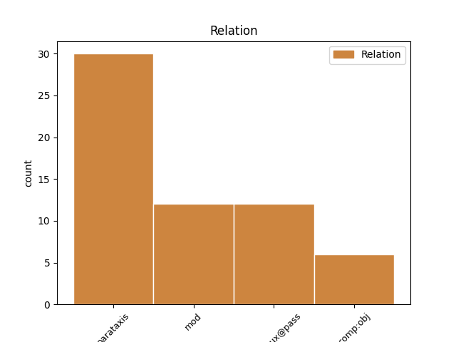
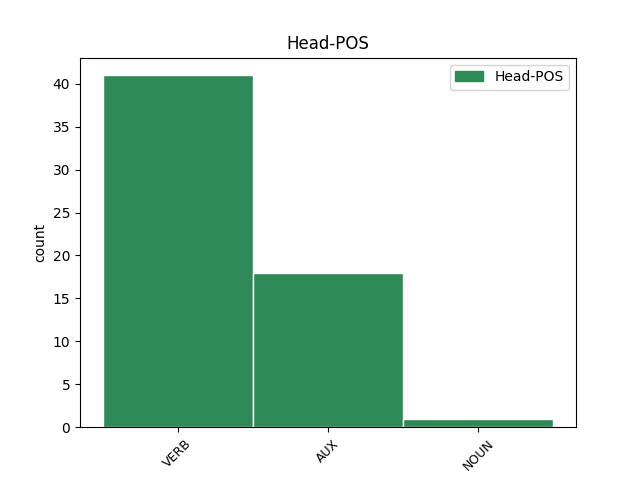
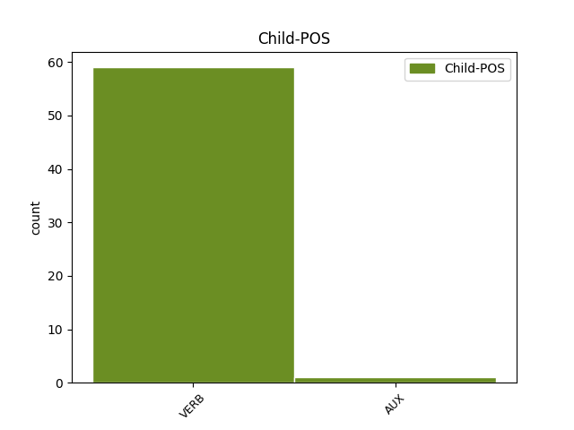

Distribution of features within this leaf



Agreement Rules sorted by frequency.
- When the dependent token is the parataxis(parataxis) of the head token, and the head token is VERB
1 З _ _ _ _ 0 _ _ _
2 пашчы _ _ _ _ 0 _ _ _
3 пачвары _ _ _ _ 0 _ _ _
4 вылятаў вылятаць VERB NN Aspect=Imp|Mood=Ind|Number=Sing|Person=3|Tense=Past|VerbForm=Fin|Voice=Act 0 _ _ _
5 агонь _ _ _ _ 0 _ _ _
6 , _ _ _ _ 0 _ _ _
7 вочы _ _ _ _ 0 _ _ _
8 палалі палаць VERB VBC Aspect=Perf|Mood=Ind|Number=Plur|Tense=Past|VerbForm=Fin|Voice=Act 4 parataxis _ _
9 шаленствам _ _ _ _ 0 _ _ _
10 . _ _ _ _ 0 _ _ _
1 І _ _ _ _ 0 _ _ _
2 толькi _ _ _ _ 0 _ _ _
3 ў _ _ _ _ 0 _ _ _
4 Мiнску _ _ _ _ 0 _ _ _
5 быў быць AUX _ Aspect=Imp|Gender=Masc|Mood=Ind|Number=Sing|Tense=Past|VerbForm=Fin|Voice=Act 0 _ _ _
6 адзначаны адзначыць VERB _ Aspect=Perf|Gender=Masc|Number=Sing|Tense=Past|Variant=Short|VerbForm=Part|Voice=Pass 5 comp:aux@pass _ _
7 летась _ _ _ _ 0 _ _ _
8 рост _ _ _ _ 0 _ _ _
9 рэальных _ _ _ _ 0 _ _ _
10 заробкаў _ _ _ _ 0 _ _ _
11 работнiкаў _ _ _ _ 0 _ _ _
12 аховы _ _ _ _ 0 _ _ _
13 здароўя _ _ _ _ 0 _ _ _
14 на _ _ _ _ 0 _ _ _
15 1,4 _ _ _ _ 0 _ _ _
16 працэнта _ _ _ _ 0 _ _ _
17 , _ _ _ _ 0 _ _ _
18 што _ _ _ _ 0 _ _ _
19 з'яўляецца _ _ _ _ 0 _ _ _
20 сведчаннем _ _ _ _ 0 _ _ _
21 увагi _ _ _ _ 0 _ _ _
22 да _ _ _ _ 0 _ _ _
23 нашай _ _ _ _ 0 _ _ _
24 галiны _ _ _ _ 0 _ _ _
25 з _ _ _ _ 0 _ _ _
26 боку _ _ _ _ 0 _ _ _
27 сталiчных _ _ _ _ 0 _ _ _
28 уладаў _ _ _ _ 0 _ _ _
29 . _ _ _ _ 0 _ _ _
1 Да _ _ _ _ 0 _ _ _
2 тэмы _ _ _ _ 0 _ _ _
3 навукі _ _ _ _ 0 _ _ _
4 былі быць AUX _ Aspect=Imp|Mood=Ind|Number=Plur|Tense=Past|VerbForm=Fin|Voice=Act 0 _ _ _
5 прывязаны _ _ _ _ 0 _ _ _
6 і _ _ _ _ 0 _ _ _
7 дэфіле _ _ _ _ 0 _ _ _
8 — _ _ _ _ 0 _ _ _
9 у _ _ _ _ 0 _ _ _
10 адным _ _ _ _ 0 _ _ _
11 з _ _ _ _ 0 _ _ _
12 іх _ _ _ _ 0 _ _ _
13 кожная _ _ _ _ 0 _ _ _
14 ўдзельніца _ _ _ _ 0 _ _ _
15 прымерала прымяраць VERB _ Aspect=Imp|Gender=Fem|Mood=Ind|Number=Sing|Tense=Past|VerbForm=Fin|Voice=Act 4 parataxis _ _
16 на _ _ _ _ 0 _ _ _
17 сябе _ _ _ _ 0 _ _ _
18 адзенне _ _ _ _ 0 _ _ _
19 са _ _ _ _ 0 _ _ _
20 спецыяльнай _ _ _ _ 0 _ _ _
21 “ _ _ _ _ 0 _ _ _
22 касмічнай _ _ _ _ 0 _ _ _
23 ” _ _ _ _ 0 _ _ _
24 калекцыі _ _ _ _ 0 _ _ _
25 . _ _ _ _ 0 _ _ _
1 Акрамя _ _ _ _ 0 _ _ _
2 гэтага _ _ _ _ 0 _ _ _
3 , _ _ _ _ 0 _ _ _
4 мінфін _ _ _ _ 0 _ _ _
5 арганізуе арганізоўваць VERB VBC Aspect=Imp|Mood=Ind|Number=Sing|Person=3|Tense=Pres|VerbForm=Fin|Voice=Act 0 _ _ _
6 ўлік _ _ _ _ 0 _ _ _
7 знешніх _ _ _ _ 0 _ _ _
8 пазык _ _ _ _ 0 _ _ _
9 , _ _ _ _ 0 _ _ _
10 прыцягнутых _ _ _ _ 0 _ _ _
11 пад _ _ _ _ 0 _ _ _
12 гарантыі _ _ _ _ 0 _ _ _
13 ўрада _ _ _ _ 0 _ _ _
14 Беларусі _ _ _ _ 0 _ _ _
15 , _ _ _ _ 0 _ _ _
16 падаючы падаваць VERB VBG Aspect=Imp|Tense=Pres|VerbForm=Conv|Voice=Act 5 mod _ _
17 адпаведную _ _ _ _ 0 _ _ _
18 інфармацыю _ _ _ _ 0 _ _ _
19 ў _ _ _ _ 0 _ _ _
20 мінэканомікі _ _ _ _ 0 _ _ _
21 . _ _ _ _ 0 _ _ _
1 Да _ _ _ _ 0 _ _ _
2 таго _ _ _ _ 0 _ _ _
3 ж _ _ _ _ 0 _ _ _
4 насельнiцтва _ _ _ _ 0 _ _ _
5 Еўропы _ _ _ _ 0 _ _ _
6 iмклiва _ _ _ _ 0 _ _ _
7 старэе старэць VERB VBC Aspect=Imp|Mood=Ind|Number=Sing|Person=3|Tense=Pres|VerbForm=Fin|Voice=Act 0 _ _ _
8 , _ _ _ _ 0 _ _ _
9 што _ _ _ _ 0 _ _ _
10 таксама _ _ _ _ 0 _ _ _
11 павялiчвае павялiчваць VERB VBC Aspect=Imp|Mood=Ind|Number=Sing|Person=3|Tense=Pres|VerbForm=Fin|Voice=Act 7 comp:obj _ _
12 нагрузку _ _ _ _ 0 _ _ _
13 на _ _ _ _ 0 _ _ _
14 нацыянальныя _ _ _ _ 0 _ _ _
15 сiстэмы _ _ _ _ 0 _ _ _
16 аховы _ _ _ _ 0 _ _ _
17 здароўя _ _ _ _ 0 _ _ _
18 . _ _ _ _ 0 _ _ _
1 У _ _ _ _ 0 _ _ _
2 2009 _ _ _ _ 0 _ _ _
3 годзе _ _ _ _ 0 _ _ _
4 прырост _ _ _ _ 0 _ _ _
5 колькасцi _ _ _ _ 0 _ _ _
6 ўрачоў _ _ _ _ 0 _ _ _
7 па _ _ _ _ 0 _ _ _
8 сiстэме _ _ _ _ 0 _ _ _
9 аховы _ _ _ _ 0 _ _ _
10 здароўя _ _ _ _ 0 _ _ _
11 склаў складаць NOUN NN Aspect=Perf|Gender=Masc|Mood=Ind|Number=Sing|Tense=Past|VerbForm=Fin|Voice=Act 0 _ _ _
12 738 _ _ _ _ 0 _ _ _
13 чалавек _ _ _ _ 0 _ _ _
14 , _ _ _ _ 0 _ _ _
15 аднак _ _ _ _ 0 _ _ _
16 гэта _ _ _ _ 0 _ _ _
17 не _ _ _ _ 0 _ _ _
18 знiзiла знiзiць VERB VBC Aspect=Perf|Gender=Neut|Mood=Ind|Number=Sing|Tense=Past|VerbForm=Fin|Voice=Act 11 mod _ _
19 нагрузку _ _ _ _ 0 _ _ _
20 на _ _ _ _ 0 _ _ _
21 працуючых _ _ _ _ 0 _ _ _
22 урачоў _ _ _ _ 0 _ _ _
23 , _ _ _ _ 0 _ _ _
24 наадварот _ _ _ _ 0 _ _ _
25 , _ _ _ _ 0 _ _ _
26 каэфiцыент _ _ _ _ 0 _ _ _
27 сумяшчальнiцтва _ _ _ _ 0 _ _ _
28 вырас _ _ _ _ 0 _ _ _
29 і _ _ _ _ 0 _ _ _
30 складае _ _ _ _ 0 _ _ _
31 цяпер _ _ _ _ 0 _ _ _
32 1,41 _ _ _ _ 0 _ _ _
33 стаўкi _ _ _ _ 0 _ _ _
34 ( _ _ _ _ 0 _ _ _
35 у _ _ _ _ 0 _ _ _
36 2008 _ _ _ _ 0 _ _ _
37 годзе _ _ _ _ 0 _ _ _
38 — _ _ _ _ 0 _ _ _
39 1,39 _ _ _ _ 0 _ _ _
40 ) _ _ _ _ 0 _ _ _
41 . _ _ _ _ 0 _ _ _
Disagree Examples:
1 Акрамя _ _ _ _ 0 _ _ _
2 цэнтральнага _ _ _ _ 0 _ _ _
3 офіса _ _ _ _ 0 _ _ _
4 ў _ _ _ _ 0 _ _ _
5 Сеуле _ _ _ _ 0 _ _ _
6 , _ _ _ _ 0 _ _ _
7 Daeryook _ _ _ _ 0 _ _ _
8 & _ _ _ _ 0 _ _ _
9 Aju _ _ _ _ 0 _ _ _
10 Internatonal _ _ _ _ 0 _ _ _
11 Law _ _ _ _ 0 _ _ _
12 Firm _ _ _ _ 0 _ _ _
13 мае мець VERB VBC Aspect=Imp|Mood=Ind|Number=Sing|Person=3|Tense=Pres|VerbForm=Fin|Voice=Act 0 _ _ _
14 свае _ _ _ _ 0 _ _ _
15 прадстаўніцтвы _ _ _ _ 0 _ _ _
16 ў _ _ _ _ 0 _ _ _
17 Еўрасаюзе _ _ _ _ 0 _ _ _
18 , _ _ _ _ 0 _ _ _
19 Кітаі _ _ _ _ 0 _ _ _
20 , _ _ _ _ 0 _ _ _
21 Расіі _ _ _ _ 0 _ _ _
22 і _ _ _ _ 0 _ _ _
23 ЗША _ _ _ _ 0 _ _ _
24 " _ _ _ _ 0 _ _ _
25 , _ _ _ _ 0 _ _ _
26 -- _ _ _ _ 0 _ _ _
27 распавялі распавяць VERB VBC Aspect=Perf|Mood=Ind|Number=Plur|Tense=Past|VerbForm=Fin|Voice=Act 13 parataxis _ _
28 ў _ _ _ _ 0 _ _ _
29 мінэканомікі _ _ _ _ 0 _ _ _
30 . _ _ _ _ 0 _ _ _
1 Ён _ _ _ _ 0 _ _ _
2 шмат _ _ _ _ 0 _ _ _
3 выпіў _ _ _ _ 0 _ _ _
4 , _ _ _ _ 0 _ _ _
5 распрануўся _ _ _ _ 0 _ _ _
6 да _ _ _ _ 0 _ _ _
7 трусоў _ _ _ _ 0 _ _ _
8 і _ _ _ _ 0 _ _ _
9 пайшоў пайсцi VERB VBC Aspect=Perf|Gender=Masc|Mood=Ind|Number=Sing|Tense=Past|VerbForm=Fin|Voice=Act 0 _ _ _
10 па _ _ _ _ 0 _ _ _
11 тонкім _ _ _ _ 0 _ _ _
12 лёдзе _ _ _ _ 0 _ _ _
13 , _ _ _ _ 0 _ _ _
14 не _ _ _ _ 0 _ _ _
15 рэагуючы рэаговаць VERB VBG Aspect=Imp|Tense=Pres|VerbForm=Conv|Voice=Act 9 mod _ _
16 на _ _ _ _ 0 _ _ _
17 просьбы _ _ _ _ 0 _ _ _
18 сяброў _ _ _ _ 0 _ _ _
19 вярнуцца _ _ _ _ 0 _ _ _
20 . _ _ _ _ 0 _ _ _
1 Раней _ _ _ _ 0 _ _ _
2 я _ _ _ _ 0 _ _ _
3 чула чуць VERB VBC Aspect=Imp|Gender=Fem|Mood=Ind|Number=Sing|Tense=Past|VerbForm=Fin|Voice=Act 0 _ _ _
4 ( _ _ _ _ 0 _ _ _
5 а _ _ _ _ 0 _ _ _
6 на _ _ _ _ 0 _ _ _
7 самой _ _ _ _ 0 _ _ _
8 справе _ _ _ _ 0 _ _ _
9 , _ _ _ _ 0 _ _ _
10 сустракаюся сустракаца VERB VBC Aspect=Imp|Mood=Ind|Number=Sing|Person=1|Tense=Pres|VerbForm=Fin|Voice=Mid 3 parataxis _ _
11 з _ _ _ _ 0 _ _ _
12 гэтым _ _ _ _ 0 _ _ _
13 меркаваннем _ _ _ _ 0 _ _ _
14 пастаянна _ _ _ _ 0 _ _ _
15 ) _ _ _ _ 0 _ _ _
16 , _ _ _ _ 0 _ _ _
17 што _ _ _ _ 0 _ _ _
18 беларуская _ _ _ _ 0 _ _ _
19 мова _ _ _ _ 0 _ _ _
20 -- _ _ _ _ 0 _ _ _
21 гэта _ _ _ _ 0 _ _ _
22 такая _ _ _ _ 0 _ _ _
23 “ _ _ _ _ 0 _ _ _
24 дзіўная _ _ _ _ 0 _ _ _
25 ” _ _ _ _ 0 _ _ _
26 расейская _ _ _ _ 0 _ _ _
27 . _ _ _ _ 0 _ _ _
1 Гаварылі _ _ _ _ 0 _ _ _
2 , _ _ _ _ 0 _ _ _
3 што _ _ _ _ 0 _ _ _
4 яны _ _ _ _ 0 _ _ _
5 вельмі _ _ _ _ 0 _ _ _
6 добра _ _ _ _ 0 _ _ _
7 разумеюць разумець VERB VBC Aspect=Imp|Mood=Ind|Number=Plur|Person=3|Tense=Pres|VerbForm=Fin|Voice=Act 0 _ _ _
8 , _ _ _ _ 0 _ _ _
9 як _ _ _ _ 0 _ _ _
10 сябе _ _ _ _ 0 _ _ _
11 адчувалі адчуваць VERB VBC Aspect=Imp|Mood=Ind|Number=Plur|Tense=Past|VerbForm=Fin|Voice=Act 7 comp:obj _ _
12 чэхі _ _ _ _ 0 _ _ _
13 пасля _ _ _ _ 0 _ _ _
14 1968 _ _ _ _ 0 _ _ _
15 году _ _ _ _ 0 _ _ _
16 , _ _ _ _ 0 _ _ _
17 таму _ _ _ _ 0 _ _ _
18 што _ _ _ _ 0 _ _ _
19 Беларусь _ _ _ _ 0 _ _ _
20 знаходзіцца _ _ _ _ 0 _ _ _
21 пад _ _ _ _ 0 _ _ _
22 пастаяннай _ _ _ _ 0 _ _ _
23 акупацыяй _ _ _ _ 0 _ _ _
24 . _ _ _ _ 0 _ _ _
1 Калі _ _ _ _ 0 _ _ _
2 я _ _ _ _ 0 _ _ _
3 іх _ _ _ _ 0 _ _ _
4 запытвала запытваць VERB VBC Aspect=Imp|Gender=Fem|Mood=Ind|Number=Sing|Tense=Past|VerbForm=Fin|Voice=Act 0 _ _ _
5 , _ _ _ _ 0 _ _ _
6 чаму _ _ _ _ 0 _ _ _
7 яны _ _ _ _ 0 _ _ _
8 гавораць гаварыць VERB VBC Aspect=Imp|Mood=Ind|Number=Plur|Person=3|Tense=Pres|VerbForm=Fin|Voice=Act 4 comp:obj _ SpaceAfter=No
9 , _ _ _ _ 0 _ _ _
10 што _ _ _ _ 0 _ _ _
11 любяць _ _ _ _ 0 _ _ _
12 сваю _ _ _ _ 0 _ _ _
13 краіну _ _ _ _ 0 _ _ _
14 , _ _ _ _ 0 _ _ _
15 шануюць _ _ _ _ 0 _ _ _
16 гісторыю _ _ _ _ 0 _ _ _
17 , _ _ _ _ 0 _ _ _
18 не _ _ _ _ 0 _ _ _
19 любяць _ _ _ _ 0 _ _ _
20 рускіх _ _ _ _ 0 _ _ _
21 -- _ _ _ _ 0 _ _ _
22 але _ _ _ _ 0 _ _ _
23 размаўляюць _ _ _ _ 0 _ _ _
24 па-расейску _ _ _ _ 0 _ _ _
25 , _ _ _ _ 0 _ _ _
26 а _ _ _ _ 0 _ _ _
27 не _ _ _ _ 0 _ _ _
28 па-беларуску _ _ _ _ 0 _ _ _
29 , _ _ _ _ 0 _ _ _
30 я _ _ _ _ 0 _ _ _
31 чула _ _ _ _ 0 _ _ _
32 вельмі _ _ _ _ 0 _ _ _
33 дзіўныя _ _ _ _ 0 _ _ _
34 адказы _ _ _ _ 0 _ _ _
35 : _ _ _ _ 0 _ _ _
36 гэта _ _ _ _ 0 _ _ _
37 ўжо _ _ _ _ 0 _ _ _
38 немагчыма _ _ _ _ 0 _ _ _
39 ... _ _ _ _ 0 _ _ _